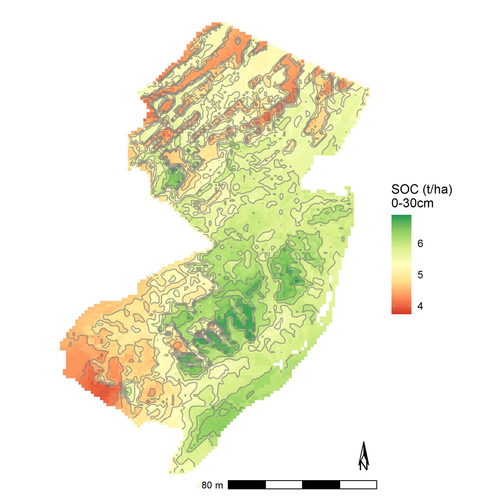

NJ SOC MAPPING
1
NJ SOC MAPPING
2
Introduction
2.1
Modeling Approach
2.2
Study Area
2.3
Big Geo Data
2.4
Calculations
3
Soil Data
3.1
Soil organic carbon (SOC) ground measurements
3.2
Some Libraries
3.3
Input data in R
3.4
Create the SOC data
3.5
Working Data
4
Co-Variates and Raster Files
4.1
CHELSA global downscaled climate data set
4.2
Covariates plot
5
Geo-matching the Dataset
5.1
Technical steps - Geo-matching and Rasterize in R
5.2
Step 2 - Adding raster soilmap to the raster stack
5.3
Step 3 - Geo-matching
5.4
Step 4 - Rasterize and export the results as geotiff
6
Regression-Kriging
6.1
Data preparation
6.2
Regression Model
6.3
stepwise variable selection
6.4
Model Validation: graphical diagnosis of the regression analysis
6.5
Prediction and residual kriging
6.6
Cross-validation of regression-kriging models
7
Random-Forest
7.1
Modeling Approach
7.2
Data preparation
7.3
define a model formula
7.3.1
Number of predictors used
7.3.2
Check if the error stabilizes
7.3.3
Make a prediction across all NJ
7.4
Using modified Maps to show the Spatial distribution of the SOC stocks across NJ
7.4.1
tMap
7.4.2
tMap view mode
7.4.3
With the sampling location
7.5
Using GGPLOT2
7.6
With modified color pallett
7.7
Using quantile regression forest to estimate uncertainty
8
Support Vector Machines Model
9
Model evaluation
10
RothC model
Published with bookdown
MACHINE LEARNING FOR MODELING SOC STOCKS IN NJ
MACHINE LEARNING FOR MODELING SOC STOCKS IN NJ
EWAN OLEGHE
2023-07-09
Chapter 1
NJ SOC MAPPING
